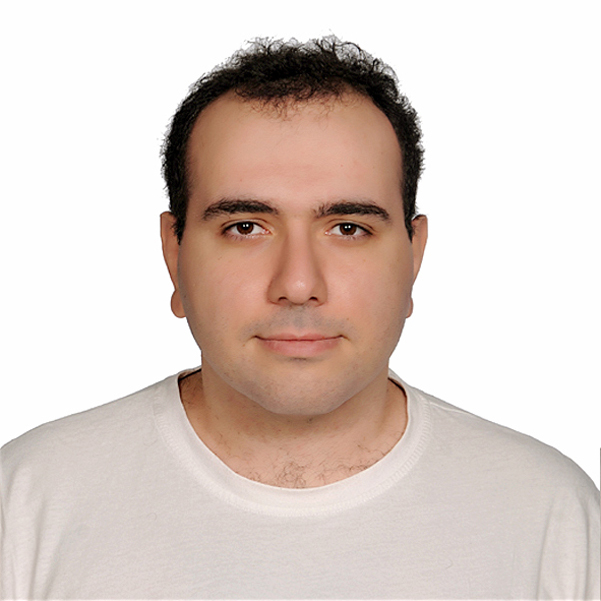

Usame
Yiğit
Software Developer
About Me
As a fellow learner who loves to share what he acquired in the process
with his co- leagues, I’m a wonderer that tries to improve on coding. I
worked on several companies and developed some skills on software
development. Because I’m very enjoying coding, currently I’m trying to
sharpen my skills on Web Services and design patterns.
Experience
Software Developer
GURU Sistem Yönetim ve Yazılım/İstanbul/JAN. 2023 - SEP. 2023
As a Software Developer worked on ERP desktop applications the company
developed:
-
Developed panels for Java Swing based Textile specialized ERP apps
- Fixed some data oriented, visual, etc. bugs
- Prepared queries for lists on panels
-
Used Hibernate and Annotations to implement ORM, also used design
patterns such as Command patter MVC etc.
Long Term Intern
Kitap Yurdu/İstanbul/JULY 2019 – FEB. 2020
Worked in a b2b selling website project:
- Tested the project as a dummy user.
- Adjusted some bugs on the project.
Junior IT Consultant
White Global/İstanbul/FEB 2018 – JULT. 2019
As an IT consultant:
- Developed some websites using WordPress.
- Maintained hosting and domains for the company.
- Prepared some catalogues with the help of Photoshop.
Education
Game Development Trainee
Wissen Akademie/İstanbul/DEC. 2021 – APRIL 2022
Participated in Unity based Game Development course:
- Trained on C#, OOP, OOP principles, SOLID Principles
- Also Learned some basic concepts of Unity
Computer Engineering
İstanbul Bilgi University\İstanbul\2012 – 2018
GPA: 3.00
Skills
- Java, C#, OOP, OOP Principles
- HTML, CSS, SOLID Princibles, Agile Development
- MySQL, MSSQL, .NET Framework, ORM, Design Patterns, MVC
- JavaScript, Java Spring
References